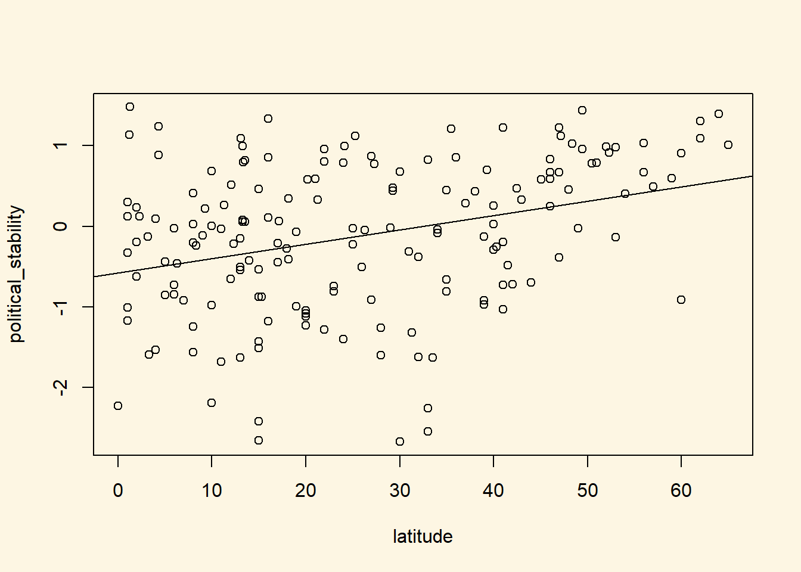
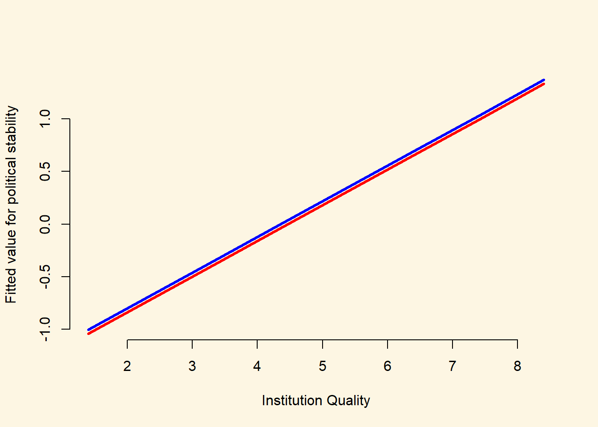

Chapter 7 Multiple linear regression models (I)
7.1 Seminar
library(foreign)
library(texreg)rm(list = ls())7.1.1 Loading, Understanding and Cleaning our Data
Today, we load the full standard (cross-sectional) dataset from the Quality of Government Institute (this is a newer version that the one we used in week 3). This is a great data source for comparativist political science research. The codebook is available from their main website. You can also find time-series and cross-section data sets on this page.
The dataset is in stata format (.dta). Loading it requires the foreign library and the read.dta() function which operates similar to read.csv().
Let’s load the data set
# load dataset in Stata format from online source
world_data <- read.dta("https://github.com/philippbroniecki/statistics1/raw/master/data/qog_std_cs_jan15.dta")
# check the dimensions of the dataset
dim(world_data)[1] 193 2037The dataset contains many variables. We will select a subset of variables that we want to work with. We are interested in political stability. Specifically, we want to find out what predicts the level of political stability. Therefore, political_stability is our dependent variable (also called response variable, left-hand-side variable, explained/predicted variable). We will also select a variable that identifies each row (observation) in the dataset uniquely: cname which is the name of the country. Potential predictors (independent variables, right-hand-side variables, covariates) are:
lp_lat_abstis the distance to the equator which we rename intolatitudedr_ingis an index for the level of globalization which we rename toglobalizationti_cpiis Transparency International’s Corruptions Perceptions Index, renamed toinstitutions_quality(larger values mean better quality institutions, i.e. less corruption)br_demis a factor variable stating whether the relevant country is a democracy or not (with labels"1. Democracy"and"0. Dictatorship")
Our dependent variable:
wbgi_psewhich we rename intopolitical_stability(larger values mean more stability)
One approach of selecting a subset of variables we’re interested in, is to use the square bracket [ ] operator. But first, we rename the variables we care about like we did last week.
names(world_data)[which(names(world_data) == "cname")] <- "country"
names(world_data)[which(names(world_data) == "wbgi_pse")] <- "political_stability"
names(world_data)[which(names(world_data) == "lp_lat_abst")] <- "latitude"
names(world_data)[which(names(world_data) == "dr_ig")] <- "globalization"
names(world_data)[which(names(world_data) == "chga_demo")] <- "democracy"
names(world_data)[which(names(world_data) == "ti_cpi")] <- "institutions_quality"Now, we take our subset. We will create an object named keep which is a vector of the variable names that we would like to keep for the analysis. We can then use this vector to subset our world_data object by including it within the square parentheses:
keep <- c("country", "political_stability", "latitude", "globalization","democracy", "institutions_quality")
world_data <- world_data[, keep]Let’s make sure we’ve got everything we need
head(world_data) country political_stability latitude globalization
1 Afghanistan -2.5498192 0.3666667 31.46042
2 Albania -0.1913142 0.4555556 58.32265
3 Algeria -1.2624909 0.3111111 52.37114
4 Andorra 1.3064846 0.4700000 NA
5 Angola -0.2163249 0.1366667 44.73296
6 Antigua and Barbuda 0.9319394 0.1892222 48.15911
democracy institutions_quality
1 0. Dictatorship 1.4
2 1. Democracy 3.3
3 0. Dictatorship 2.9
4 1. Democracy NA
5 0. Dictatorship 1.9
6 1. Democracy NAThe function summary() lets you summarize data sets. We will look at the dataset now. When the dataset is small in the sense that you have few variables (columns) then this is a very good way to get a good overview. It gives you an idea about the level of measurement of the variables and the scale. country, for example, is a character variable as opposed to a number. Countries do not have any order, so the level of measurement is categorical.
If you think about the next variable, political stability, and how one could measure it you know there is an order implicit in the measurement: more or less stability. From there, what you need to know is whether the more or less is ordinal or interval scaled. Checking political_stability you see a range from roughly -3 to 1.5. The variable is numerical and has decimal places. This tells you that the variable is at least interval scaled. You will not see ordinally scaled variables with decimal places. Examine the summaries of the other variables and determine their level of measurement.
summary(world_data) country political_stability latitude globalization
Length:193 Min. :-3.10637 Min. :0.0000 Min. :24.35
Class :character 1st Qu.:-0.72686 1st Qu.:0.1444 1st Qu.:45.22
Mode :character Median :-0.01900 Median :0.2444 Median :54.99
Mean :-0.06079 Mean :0.2865 Mean :57.15
3rd Qu.: 0.78486 3rd Qu.:0.4444 3rd Qu.:68.34
Max. : 1.57240 Max. :0.7222 Max. :92.30
NA's :12 NA's :12
democracy institutions_quality
0. Dictatorship: 74 Min. :1.010
1. Democracy :118 1st Qu.:2.400
NA's : 1 Median :3.300
Mean :3.988
3rd Qu.:5.100
Max. :9.300
NA's :12 The variables latitude, globalization and inst_quality have 12 missing values each marked as NA. democracy has 1 missing value. Missing values could cause trouble because operations including an NA will produce NA as a result (e.g.: 1 + NA = NA). We will drop these missing values from our data set using the is.na() function and square brackets. The exlamation mark in front of is.na() means “not”. So, we keep all rows that are not NA’s on the variable latitude.
world_data <- world_data[ !is.na(world_data$latitude) ,]Generally, we want to make sure we drop missing values only from variables that we care about. Now that you have seen how to do this, drop missings from globalization, institutions_quality, and democracy yourself.
world_data <- world_data[ !is.na(world_data$globalization) ,]
world_data <- world_data[ !is.na(world_data$institutions_quality) ,]
world_data <- world_data[ !is.na(world_data$democracy) ,]summary(world_data) country political_stability latitude globalization
Length:170 Min. :-2.67338 Min. :0.0000 Min. :25.46
Class :character 1st Qu.:-0.79223 1st Qu.:0.1386 1st Qu.:46.05
Mode :character Median :-0.03174 Median :0.2500 Median :55.87
Mean :-0.12018 Mean :0.2865 Mean :57.93
3rd Qu.: 0.66968 3rd Qu.:0.4444 3rd Qu.:69.02
Max. : 1.48047 Max. :0.7222 Max. :92.30
democracy institutions_quality
0. Dictatorship: 67 Min. :1.400
1. Democracy :103 1st Qu.:2.500
Median :3.300
Mean :4.050
3rd Qu.:5.175
Max. :9.300 Let’s look at the output of summary(world_data) again and check the range of the variable latitude. It is between 0 and 1. The codebook clarifies that the latitude of a country’s capital has been divided by 90 to get a variable that ranges from 0 to 1. This would make interpretation difficult. When interpreting the effect of such a variable a unit change (a change of 1) covers the entire range or put differently, it is a change from a country at the equator to a country at one of the poles.
We therefore multiply by 90 again. This will turn the units of the latitude variable into degrees again which makes interpretation easier.
# transform latitude variable
world_data$latitude <- world_data$latitude * 907.1.2 Estimating a Bivariate Regression
Is there a correlation between the distance of a country to the equator and the level of political stability? Both political stability (dependent variable) and distance to the equator (independent variable) are continuous. Therefore, we will get an idea about the relationship using a scatter plot.
plot(political_stability ~ latitude, data = world_data)Looking at the cloud of points suggests that there might be a positive relationship: increases in our independent variable latitude appear to be associated with increases in the dependent variable political_stability (the further from the equator, the more stable).
We can fit a line of best fit through the points. To do this we must estimate the bivariate regression model with the lm() function and then plot the line using the abline() function.
latitude_model <- lm(political_stability ~ latitude, data = world_data)
# add the line
plot(political_stability ~ latitude, data = world_data)
abline(latitude_model)
We can also view a simple summary of the regression by using the screenreg function:
# regression output
screenreg(latitude_model)
=======================
Model 1
-----------------------
(Intercept) -0.58 ***
(0.12)
latitude 0.02 ***
(0.00)
-----------------------
R^2 0.11
Adj. R^2 0.10
Num. obs. 170
RMSE 0.89
=======================
*** p < 0.001, ** p < 0.01, * p < 0.05Thinking back to last week, how can we interpret this regression ouput?
- The coefficient for the variable
latitude(\(\beta_1\)) indicates that a one-unit increase in a country’s latitude is associated with a0.02increase in the measure of political stability, on average. Question: Is this association statistically significant at the 95% confidence level? - The coefficient for the
(intercept)term (\(\beta_0\)) indicates that the average level of political stability for a country with a latitude of 0 is \(-0.58\) (wherelatitude = 0is a country positioned at the equator) - The \(R^2\) of the model is 0.11. This implies that 11% of the variation in the dependent variable (political stability) is explained by the independent variable (latitude) in the model.
7.1.3 Multivariate Regression
The regression above suggests that there is a significant association between these variables However, as good social scientistis, we probably do not think that the distance of a country from the equator is a theoretically relevant variable for explaining political stability. This is because there is no plausible causal link between the two. We should therefore consider other variables to include in our model.
We will include the index of globalization (higher values mean more integration with the rest of the world), the quality of institutions, and the indicator for whether the country is a democracy. For all of these variables we can come up with a theoretical story for their effect on political stability.
To specify a multiple linear regression model, the only thing we need to change is what we pass to the formula argument of the lm() function. In particular, if we wish to add additional explanatory variables, the formula argument will take the following form:
dependent.variable ~ independent.variable.1 + independent.variable.2 ... independent.variable.kwhere k indicates the total number of independent variables we would like to include in the model. In the example here, our model would therefore look like the following:
# model with more explanatory variables
inst_model <- lm(political_stability ~ latitude + globalization + institutions_quality + democracy,
data = world_data)Remember, political_stability is our dependent variable, as before, and now we have four independent variables: latitude, globalization, democracy and institutions_quality. Again, just as with the bivariate model, we can view the summarised output of the regression by using screenreg(). As we now have two models (a simple regression model, and a multiple regression model), we can join them together using the list() function, and then put all of that inside screenreg().
screenreg(list(latitude_model, inst_model))
=============================================
Model 1 Model 2
---------------------------------------------
(Intercept) -0.58 *** -1.25 ***
(0.12) (0.20)
latitude 0.02 *** 0.00
(0.00) (0.00)
globalization -0.00
(0.01)
institutions_quality 0.34 ***
(0.04)
democracy1. Democracy 0.04
(0.11)
---------------------------------------------
R^2 0.11 0.50
Adj. R^2 0.10 0.49
Num. obs. 170 170
RMSE 0.89 0.67
=============================================
*** p < 0.001, ** p < 0.01, * p < 0.05Including the two new predictors leads to substantial changes.
- First, we now explain 50% of the variance of our dependent variable instead of just 11%.
- Second, the effect of the distance to the equator is no longer significant.
- Third, better quality institutions are associated with more political stability. In particular, a one-unit increase in the measure of instituion quality (which ranges from 1 to 10) is associated with a 0.34 increase in the measure for political stability.
- Fourth, there is no significant relationship between globalization and political stability in this data.
- Fifth, there is no significant relationship between democracy and political stability in this data.
7.1.4 Joint Significance Test (F-statistic)
Whenever you add variables to your model, you will explain more of the variance in the dependent variable. That means, using your data, your model will better predict outcomes. We would like to know whether the difference (the added explanatory power) is statistically significant. The null hypothesis is that the added explanatory power is zero and the p-value gives us the probability of observing such a difference as the one we actually computed assuming that null hypothesis (no difference) is true.
The F-test is a joint hypothesis test that lets us compute that p-value. Two conditions must be fulfilled to run an F-test:
| Conditions for F-test model comparison |
|---|
Both models must be estimated from the same sample! If your added variables contain lots of missing values and therefore your n (number of observations) are reduced substantially, you are not estimating from the same sample. |
| The models must be nested. That means, the model with more variables must contain all of the variables that are also in the model with fewer variables. |
We specify two models: a restricted model and an unrestricted model. The restricted model is the one with fewer variables. The unrestricted model is the one including the extra variables. We say restricted model because we are “restricting” it to NOT depend on the extra variables. Once we estimated those two models we compare the residual sum of squares (RSS). The RSS is the sum over the squared deviations from the regression line and that is the unexplained error. The restricted model (fewer variables) is always expected to have a larger RSS than the unrestricted model. Notice that this is same as saying: the restricted model (fewer variables) has less explanatory power.
We test whether the reduction in the RSS is statistically significant using a distribution called “F distribution”. If it is, the added variables are jointly (but not necessarily individually) significant. You do not need to know how to calculate p-values from the F distribution, as we can use the anova() function in R to do this for us.
anova(latitude_model, inst_model)Analysis of Variance Table
Model 1: political_stability ~ latitude
Model 2: political_stability ~ latitude + globalization + institutions_quality +
democracy
Res.Df RSS Df Sum of Sq F Pr(>F)
1 168 133.121
2 165 74.229 3 58.892 43.636 < 0.00000000000000022 ***
---
Signif. codes: 0 '***' 0.001 '**' 0.01 '*' 0.05 '.' 0.1 ' ' 1
As we can see from the output, the p-value here is very small, which means that we can reject the null hypothesis that the unrestricted model has no more explanatory power than the restricted model.
7.1.5 Predicting outcome conditional on institutional quality
Just as we did with the simple regression model last week, we can use the fitted model object to calculate the fitted values of our dependent variable for different values of our explanatory variables. To do so, we again use the predict() function.
We proceed in three steps.
- We set the values of the covariates for which we would like to produce fitted values.
- You will need to set covariate values for every explanatory variable that you included in your model.
- As only one of our variables has a significant relationship with the outcome in the multiple regression model that we estimated above, we are really only interested in that variable (
institutions_quality). - Therefore, we will calculate fitted values over the range of
institutions_quality, while setting the values oflatitudeandglobalizationto their mean values. - As
democracyis a factor variable, we cannot use the mean value. Instead, we will setdemocracyto be equal to"1. Democracy"which is the label for democratic countries
- We calculate the fitted values.
- We report the results (here we will produce a plot).
For step one, the following code produces a data.frame of new covariate values for which we would like to calculate a fitted value from our model:
## Set the values for the explanatory variables
data_for_fitted_values <- data.frame(institutions_quality = seq(from = 1.4, to = 9.3, by = 1),
globalization = mean(world_data$globalization),
latitude = mean(world_data$latitude),
democracy = "1. Democracy"
)Here, we have set the institutions_quality variable to vary between 1.4 and 9.3, with increments of 1 unit. We have set globalization to be equal to the mean value of globalization in the world_data object, and latitude to be equal to the mean value of latitude in the world_data object. Finally, we have set democracy to be equal to "1. Democracy" (the value for democratic countries). We have then put all of these values into a new data.frame called data_for_fitted_values which we will pass to the predict() function.
Before we do that, let’s just take a quick look at the data_for_fitted_values object:
head(data_for_fitted_values) institutions_quality globalization latitude democracy
1 1.4 57.93053 25.78218 1. Democracy
2 2.4 57.93053 25.78218 1. Democracy
3 3.4 57.93053 25.78218 1. Democracy
4 4.4 57.93053 25.78218 1. Democracy
5 5.4 57.93053 25.78218 1. Democracy
6 6.4 57.93053 25.78218 1. DemocracyAs you can see, this has produced a data.frame in which every observation has a different value of institutions_quality but the same value for latitude, globalization, and democracy.
We can now calculate the fitted values for each of these combinations of our explanatory variables by passing the data_for_fitted_values object to the newdata argument of the predict() function.
# Calculate the fitted values
fitted_values <- predict(inst_model, newdata = data_for_fitted_values)
## Save the fitted values as a new variable in the data_for_fitted_values object
data_for_fitted_values$fitted_values <- fitted_valuesWe can now look again at the data_for_fitted_values object:
head(data_for_fitted_values) institutions_quality globalization latitude democracy fitted_values
1 1.4 57.93053 25.78218 1. Democracy -1.00319887
2 2.4 57.93053 25.78218 1. Democracy -0.66431685
3 3.4 57.93053 25.78218 1. Democracy -0.32543483
4 4.4 57.93053 25.78218 1. Democracy 0.01344719
5 5.4 57.93053 25.78218 1. Democracy 0.35232921
6 6.4 57.93053 25.78218 1. Democracy 0.69121123Hey presto! Now, for each of our explanatory variable combinations, we have the corresponding fitted values as calculated from our estimated regression.
Finally, we can plot these values:
plot(
fitted_values ~ institutions_quality, # Specify the formula for the plot (dependent.variable ~ independent.variable)
data = data_for_fitted_values, # Specify the data to use for the plot
xlab = "Institution Quality", # Specify the X-axis title
ylab = "Fitted value for political stability", # Specify the Y-axis title
frame.plot = FALSE, # The frame.plot = FALSE argument removes the box from around the plot
col = "blue", # The col argument specifies the color
type = "l", # type = "l" will produce a line plot, rather than the default scatter plot
lwd = 3 # lwd = 3 will increase the thinkness of the line on the plot
)
We could also use the output from our model to plot two separate lines of fitted values: one for democracies, and one for dictatorships. We have already done this for democracies, so the following code constructs a data.frame of fitted values for dictatorships:
## Set the values for the explanatory variables
data_for_fitted_values_dictator <- data.frame(institutions_quality = seq(from = 1.4, to = 9.3, by = 1),
globalization = mean(world_data$globalization),
latitude = mean(world_data$latitude),
democracy = "0. Dictatorship"
)
# Calculate the fitted values
fitted_values_dictator <- predict(inst_model, newdata = data_for_fitted_values_dictator)
## Save the fitted values as a new variable in the data_for_fitted_values object
data_for_fitted_values_dictator$fitted_values <- fitted_values_dictator
## Take a look at the output
head(data_for_fitted_values_dictator) institutions_quality globalization latitude democracy
1 1.4 57.93053 25.78218 0. Dictatorship
2 2.4 57.93053 25.78218 0. Dictatorship
3 3.4 57.93053 25.78218 0. Dictatorship
4 4.4 57.93053 25.78218 0. Dictatorship
5 5.4 57.93053 25.78218 0. Dictatorship
6 6.4 57.93053 25.78218 0. Dictatorship
fitted_values
1 -1.04148517
2 -0.70260315
3 -0.36372113
4 -0.02483911
5 0.31404291
6 0.65292493Now that we have calculated these fitted values, we can add the line for dictatorships to the plot we created above using the lines() function:
## Create the same plot as above for fitted values over the range of institution quality for democracies
plot(
fitted_values ~ institutions_quality, # Specify the formula for the plot (dependent.variable ~ independent.variable)
data = data_for_fitted_values, # Specify the data to use for the plot
xlab = "Institution Quality", # Specify the X-axis title
ylab = "Fitted value for political stability", # Specify the Y-axis title
frame.plot = FALSE, # The frame.plot = FALSE argument removes the box from around the plot
col = "blue", # The col argument specifies the color
type = "l", # type = "l" will produce a line plot, rather than the default scatter plot
lwd = 3 # lwd = 3 will increase the thinkness of the line on the plot
)
## Add an additional line of fitted values over the range of institution quality for dictatorships
lines(x = data_for_fitted_values_dictator$institutions_quality,
y = data_for_fitted_values_dictator$fitted_values,
col = "red",
lwd = 3)
We can see from the plot that the fitted values for democracies (blue line) are almost exactly the same as those for dictatorships (red line). This is reassuring, as the estimated coefficient on the democracy variable was very small (0.04) and was not statistically significantly different from 0. Often, however, it can be very illuminating to construct plots like this where we construct a line to indicate how our predicted values for Y vary across one of our explanatory variables (here, institution quality), and we create different lines for different values of another explanatory variable (here, democracy/dictatorship).
7.1.6 Additional Resources
7.1.7 Exercises
- Open a new script and save it as assignment5.
- Go to the QoG website and download the standard data and the accompanying codebook.
- Pretend that you are writing a research paper. Select one dependent variable that you want to explain with a statistical model.
- Run a simple regression (with one explanatory variable) on that dependent variable and justify your choice of explanatory variable. This will require you to think about the outcome that you are trying to explain, and what you think will be a good predictor for that outcome.
- Add some additional explanatory variables (no more than 5) to your model and justify the choice again.
- Carry out the F-test to check whether the new model explains more than the old model.
- Produce a regression table of the better model.
- Interpret the output of the better model. State your expectations and whether they were met.
- Calculate fitted values whilst varying at least one of your continuous explanatory variables.
- Plot the result.
- Interpret the plot.
- Source your entire script. If it produces errors, clean your script.
7.1.8 Midterm Preparation
We wrote a midterm preparation exercise for you. It envolves working a little bit with data (in section 3). You will obviously not get questions where you work with R, so you can skip that part of section 3 if you want.